![]()
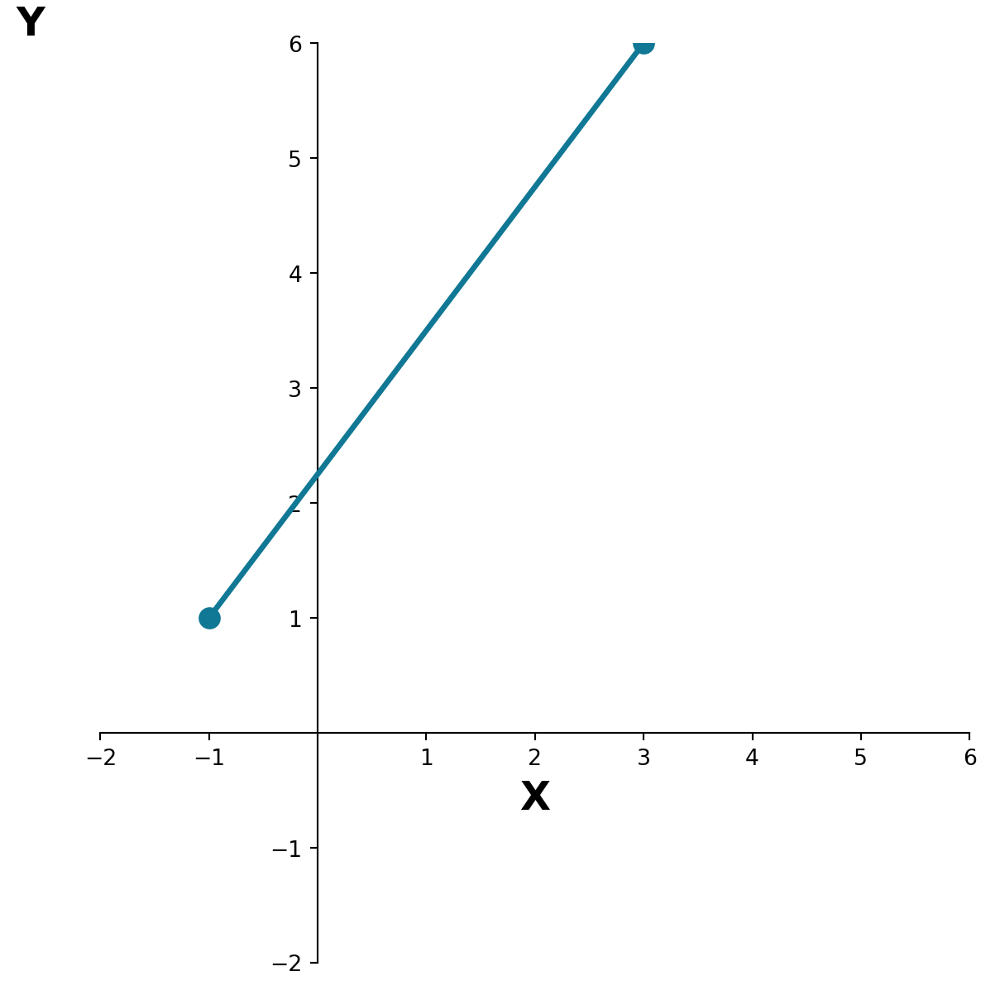
Cálculo I
La Derivada
2026-05-15
Derivada
Diferenciación: Resumen de la sección y objetivos
En esta presentación, aprenderás:
El concepto y definición de una “derivada” en cálculo.
Terminología y notación de las derivadas.
Derivadas de la mayoría de las funciones.
Puntos críticos.

Términos y Condiciones
Derivada:
La secuencia de pendientes instantáneas.
Diferenciación:
El proceso de encontrar la derivada.
Pendiente de una recta
En esta presentación, aprenderás:
El concepto y la definición de una pendiente.
Por qué LA pendiente no es útil para muchas funciones.
El papel de los límites en el cálculo de la derivada.
Pendiente
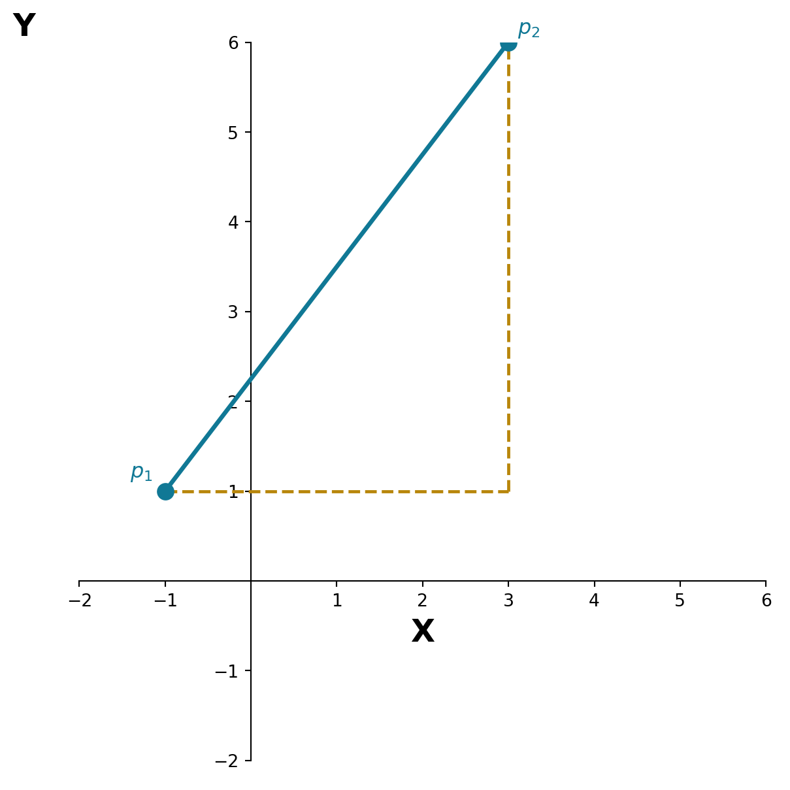
\[f({\color{teal} x}) = {\color{red} m}{\color{teal} x} + {\color{blue} b}\]
\[{\color{red} m} = \frac{{\color{goldenrod} y_2}-{\color{goldenrod} y_1}}{{\color{teal} x_2}-{\color{teal} x_1}}\] \[= \frac{{\color{goldenrod} \Delta y}}{{\color{teal} \Delta x}}\]
\[{\color{red} m} = \frac{{\color{goldenrod} 6}-{\color{goldenrod} 1}}{{\color{teal} 3}-({\color{teal} -1})}\] \[= \frac{{\color{goldenrod} 5}}{{\color{teal} 4}}\]
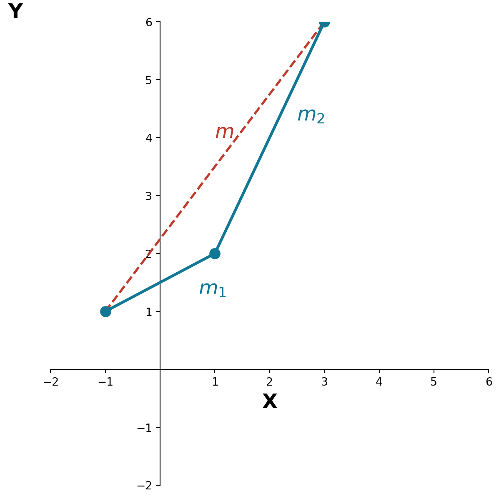
\[{\color{red} m} = \frac{{\color{goldenrod} 6}-{\color{goldenrod} 1}}{{\color{teal} 3}-({\color{teal} -1})} = \frac{{\color{goldenrod} 5}}{{\color{teal} 4}}\]
\[{\color{red} m_1} = \frac{{\color{goldenrod} 2}-{\color{goldenrod} 1}}{{\color{teal} 1}-({\color{teal} -1})} = \frac{{\color{goldenrod} 1}}{{\color{teal} 2}}\]
\[{\color{red} m_2} = \frac{{\color{goldenrod} 6}-{\color{goldenrod} 2}}{{\color{teal} 3}-{\color{teal} 1}} = \frac{{\color{goldenrod} 4}}{{\color{teal} 2}}\]


Conclusiones
La pendiente es ideal para una línea recta.
La pendiente para una línea curva o definida por partes es informativa pero imprecisa..
Calcular pendientes de secciones (segmentos).
La derivada es la “serie de pendientes” a medida que el ancho del segmento \(\to 0\)
Desde la pendiente a derivada
Pendiente cuando \(\color{blue}{\Delta} \color{blue}{x}\) es grande.
\[{\color{red} m} = \frac{{\color{goldenrod}{y_2}-\color{goldenrod}{y_1}}}{{\color{teal}{x_2}-\color{teal}{x_1}}} = \frac{\Delta{\color{goldenrod}{y}}}{{\color{blue}{\Delta} \color{blue}{x}}}\]
\[{\color{red} m} = \frac{{\color{goldenrod}{y_2}-\color{goldenrod}{y_1}}}{{\color{teal}{x_2}-\color{teal}{x_1}}} = \frac{\Delta{\color{goldenrod}{y}}}{{\color{blue}{\Delta} \color{blue}{x}}}\]
\[= \frac{f({\color{teal} x} + {\color{blue} \Delta} {\color{blue} x}) - f({\color{teal} x})}{{\color{blue} \Delta} {\color{blue} x}}\]
\[= \frac{f({\color{teal} x}+{\color{blue} h}) - f({\color{teal} x})}{{\color{blue} h}}\]
Derivada cuando \(\color{blue}{\Delta} \color{blue}{x}\) → 0, es infinitesimal.
\[\frac{dy}{dx} = \lim_{{\color{blue} h} \to {\color{maroon}{0}}}\left[\frac{f({\color{teal} x}+{\color{blue} h})-f({\color{teal} x})}{{\color{blue} h}}\right] = {\color{blue}{\text{...}}}\]
\[\frac{dy}{dx} = \lim_{{\color{blue} h} \to {\color{maroon}{0}}}\left[\frac{f({\color{teal} x}+{\color{blue} h})-f({\color{teal} x})}{{\color{blue} h}}\right] = {\color{blue}{\text{...}}}\]
Ejemplo de cálculo de la derivada 1a

\[f({\color{teal} x}) = \frac{5}{4}{\color{teal} x} + \frac{9}{4}\]
\[{\color{red} m} = \lim_{{\color{teal} h} \to 1}\left[\frac{f({\color{teal} x}+{\color{teal} h})-f({\color{teal} x})}{{\color{teal} h}}\right]\]
\[= \left[\frac{\left(\dfrac{5}{4}({\color{maroon} 0}+1)+\dfrac{9}{4}\right)-\left(\dfrac{5}{4}\cdot{\color{maroon} 0}+\dfrac{9}{4}\right)}{{\color{teal} 1}}\right]\]
\[= \left(\frac{5}{4}+\frac{9}{4}\right)-\frac{9}{4}\]
\[{\color{blue} = \frac{5}{4}}\]
Ejemplo de cálculo de la derivada 1b
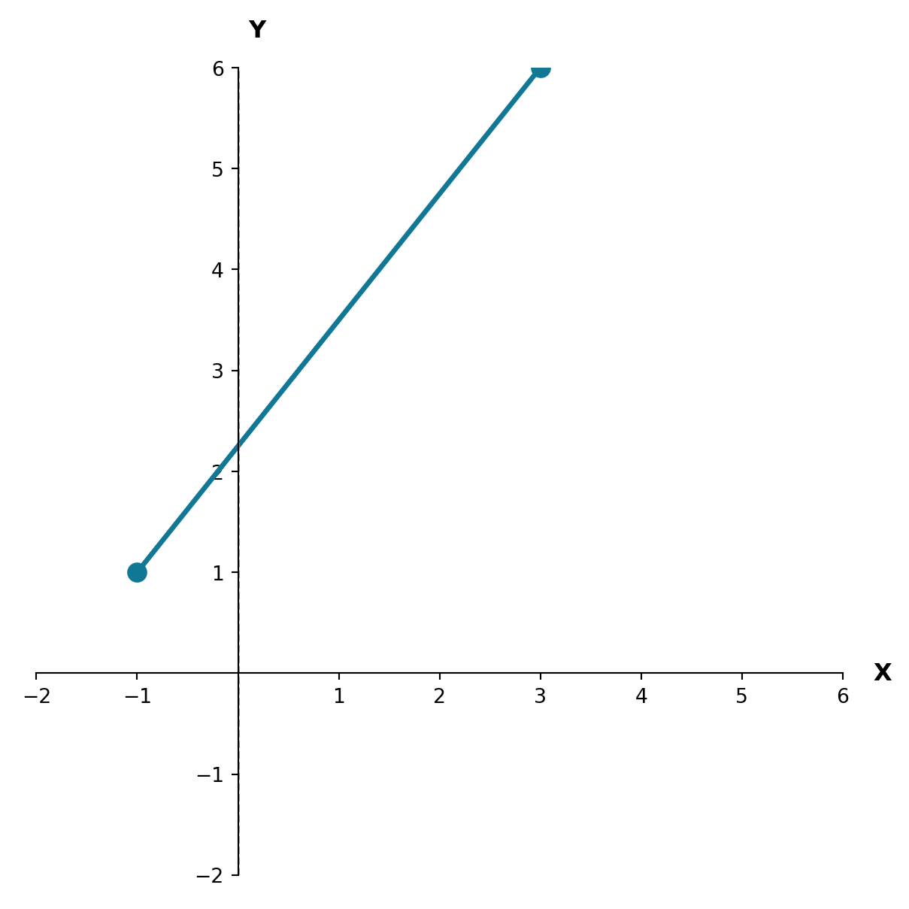
\[f({\color{teal} x}) = \frac{5}{4}{\color{teal} x} + \frac{9}{4}\]
\[\frac{d{\color{goldenrod} y}}{d{\color{teal} x}} = \lim_{{\color{teal} h} \to 0}\left[\frac{f({\color{teal} x}+{\color{teal} h})-f({\color{teal} x})}{{\color{teal} h}}\right]\]
\[= \lim_{{\color{teal} h} \to 0}\left[\frac{\left(\tfrac{5}{4}({\color{teal} x}+{\color{teal} h})+\tfrac{9}{4}\right)-\left(\tfrac{5}{4}{\color{teal} x}+\tfrac{9}{4}\right)}{{\color{teal} h}}\right]\]
\[= \lim_{{\color{teal} h} \to 0}\left[\frac{\tfrac{5}{4}{\color{teal} x}+\tfrac{5}{4}{\color{teal} h}+\tfrac{9}{4}-\tfrac{5}{4}{\color{teal} x}-\tfrac{9}{4}}{{\color{teal} h}}\right]\]
\[= \lim_{{\color{teal} h} \to 0}\left[\frac{\tfrac{5}{4}{\color{teal} h}}{{\color{teal} h}}\right]\]
\[{\color{blue} = \frac{5}{4}}\]
Ejemplo de cálculo de la derivada 2
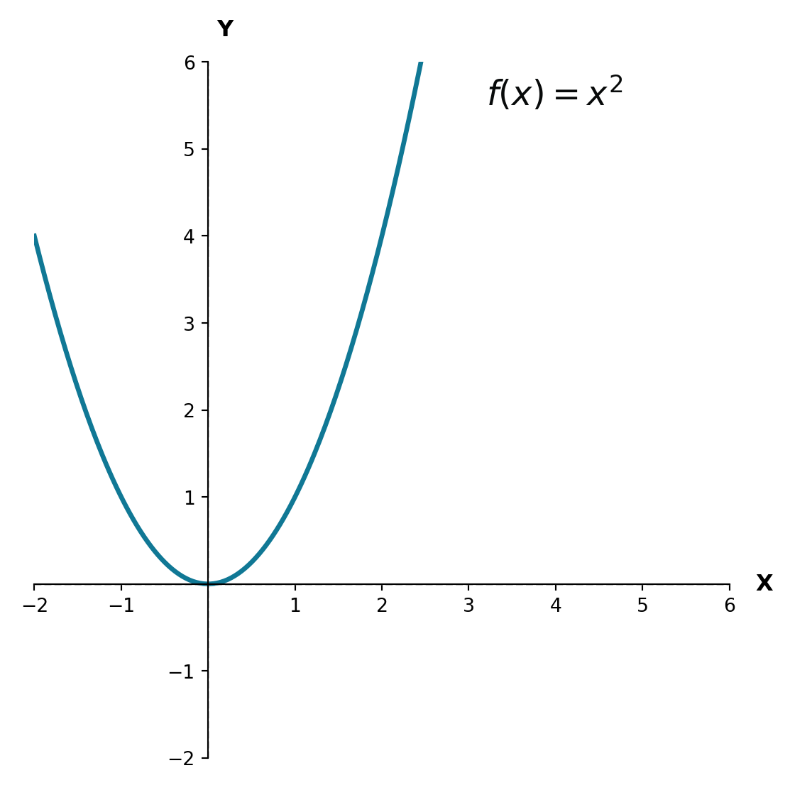
\[f({\color{teal} x}) = {\color{teal} x}^2\]
\[\frac{d{\color{goldenrod} y}}{d{\color{teal} x}} = \lim_{{\color{teal} h} \to 0}\left[\frac{({\color{teal} x}+{\color{teal} h})^2 - {\color{teal} x}^2}{{\color{teal} h}}\right]\]
\[= \lim_{{\color{teal} h} \to 0}\left[\frac{{\color{teal} x}^2 + 2{\color{teal} x}{\color{teal} h} + {\color{teal} h}^2 - {\color{teal} x}^2}{{\color{teal} h}}\right]\]
\[= \lim_{{\color{teal} h} \to 0}\left[\frac{{\color{teal} h}(2{\color{teal} x} + {\color{teal} h})}{{\color{teal} h}}\right]\]
\[= \lim_{{\color{teal} h} \to 0}\left[2{\color{teal} x} + {\color{teal} h}\right]\]
\[{\frac{d{\color{goldenrod}{y}}}{{d\color{teal}{x}}} = 2{\color{teal}{x}}}\]
Graficando la derivada
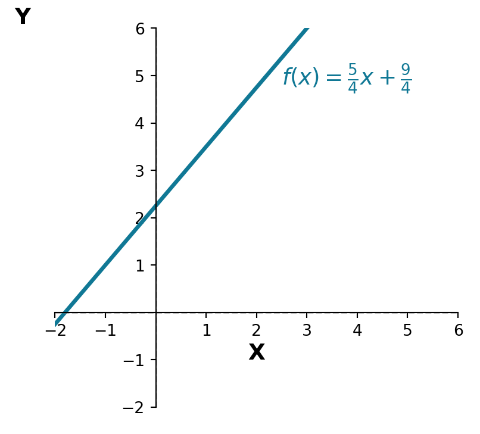
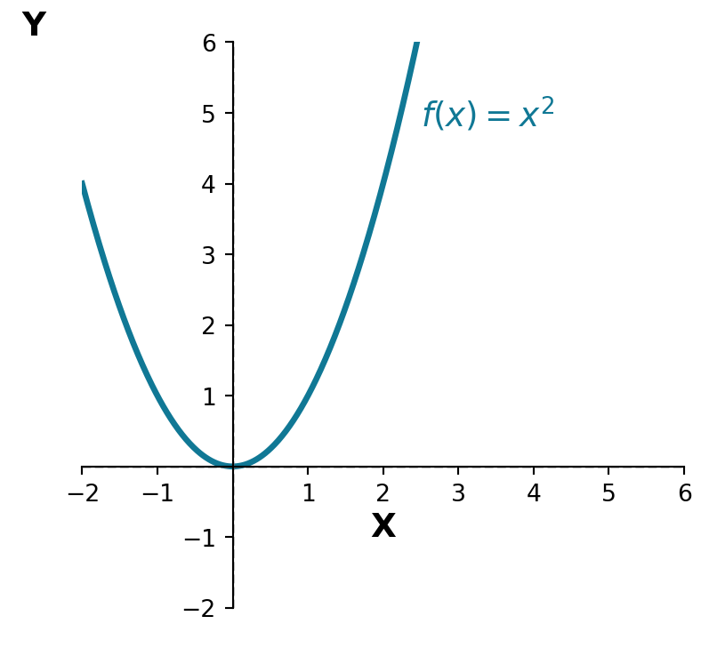
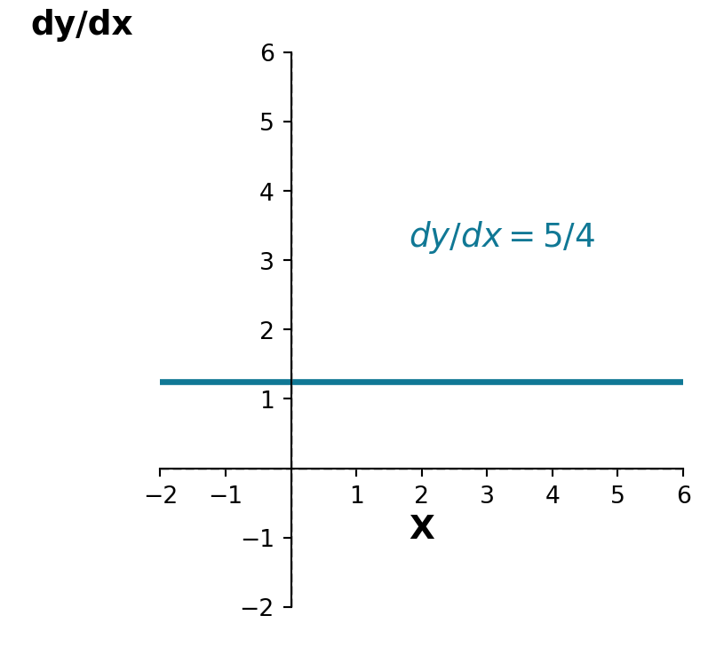
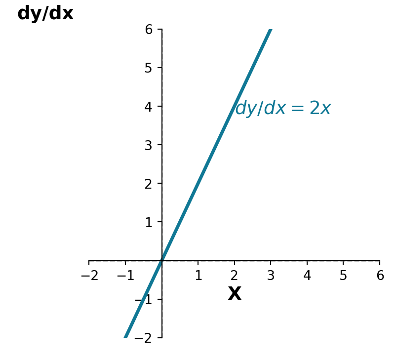
Recapitulando
Pendiente cuando \(\color{blue}{\Delta} \color{blue}{x}\) es grande.
\[{\color{red} m} = \frac{{\color{goldenrod}{y_2}-\color{goldenrod}{y_1}}}{{\color{teal}{x_2}-\color{teal}{x_1}}} = \frac{\Delta{\color{goldenrod}{y}}}{{\color{blue}{\Delta} \color{blue}{x}}}\]
\[{\color{red} m} = \frac{{\color{goldenrod}{y_2}-\color{goldenrod}{y_1}}}{{\color{teal}{x_2}-\color{teal}{x_1}}} = \frac{\Delta{\color{goldenrod}{y}}}{{\color{blue}{\Delta} \color{blue}{x}}}\]
\[= \frac{f({\color{teal} x} + {\color{blue} \Delta} {\color{blue} x}) - f({\color{teal} x})}{{\color{blue} \Delta} {\color{blue} x}}\]
\[= \frac{f({\color{teal} x}+{\color{blue} h}) - f({\color{teal} x})}{{\color{blue} h}}\]
Derivada cuando \(\color{blue}{\Delta} \color{blue}{x}\) → 0, es infinitesimal.
\[\frac{dy}{dx} = \lim_{{\color{blue} h} \to {\color{maroon}{0}}}\left[\frac{f({\color{teal} x}+{\color{blue} h})-f({\color{teal} x})}{{\color{blue} h}}\right] = {\color{blue}{\text{...}}}\]
\[\frac{dy}{dx} = \lim_{{\color{blue} h} \to {\color{maroon}{0}}}\left[\frac{f({\color{teal} x}+{\color{blue} h})-f({\color{teal} x})}{{\color{blue} h}}\right] = {\color{blue}{\text{...}}}\]
Definición formal de la derivada
La relación entre la pendiente y la derivada.
La definición formal de una derivada (pista: ¡pendiente + límite!).
Algunos ejemplos de cálculo de la derivada.
La derivada de una constante es 0 (demostración)
En esta presentación
Demostrarás lo que dice el título…
Tendrás la oportunidad de ganar más experiencia con la definición de límite de las derivadas.
Aprenderás cómo usar la definición de derivadas en demostraciones.
Derivada de una constante
\[{\color{goldenrod} f}({\color{teal} x}) = {\color{red} c}\]
\[\frac{d}{d{\color{teal} x}}{\color{goldenrod} f}({\color{teal} x}) = 0\]
Proof usando la definición de límite de la derivada
\[{\color{goldenrod} f}({\color{teal} x}) = {\color{red} c}\]
\[\frac{d{\color{goldenrod} f}}{d{\color{teal} x}} = \lim_{{\color{blue} h} \to 0} \frac{{\color{goldenrod} f}({\color{teal} x}+{\color{blue} h}) - {\color{goldenrod} f}({\color{teal} x})}{{\color{blue} h}}\]
\[= \lim_{{\color{blue} h} \to 0} \frac{{\color{red} c} - {\color{red} c}}{{\color{blue} h}} = 0\]
Varias notaciones de la derivada
En esta presentación, aprenderás:
Varias notaciones diferentes de diferenciación.
Algunas ventajas y desventajas de cada notación.
La interpretación geométrica de la derivada.
Diferentes notaciones de la derivada
Leibniz Lagrange Newton Euler
\[\frac{d{\color{goldenrod} y}}{d{\color{teal} x}} = \frac{d{\color{goldenrod} f}}{d{\color{teal} x}} = \frac{d}{d{\color{teal} x}}{\color{goldenrod} f}({\color{teal} x})\]
\[\frac{d^2{\color{goldenrod} y}}{d{\color{teal} x}^2}\]
\[\frac{d{\color{goldenrod} y}}{d{\color{teal} x}} = \frac{d{\color{goldenrod} y}}{d{\color{teal} u}} \cdot \frac{d{\color{teal} u}}{d{\color{teal} x}}\]
Ventajas:
- Clara (inequívoca)
- Fácil para la regla de la cadena
Desventajas:
- Ocupa más espacio
Leibniz Lagrange Newton Euler
\[{\color{goldenrod} f}'({\color{teal} x}) = {\color{goldenrod} f}' = {\color{goldenrod} f}_{\color{teal} x}\]
\[{\color{goldenrod} f}'' = {\color{goldenrod} f}_{{\color{teal} x}{\color{teal} x}}\]
Ventajas:
- Simple y elegante
- Conveniente para derivadas parciales
Desventajas:
- Puede ser ambigua (omite la variable)
Leibniz Lagrange Newton Euler
\[\dot{{\color{goldenrod} y}}\]
\[\ddot{{\color{goldenrod} y}}\]
Ventajas:
- Concisa
- Usada principalmente para derivadas temporales en física
Desventajas:
- No se usa para derivadas parciales
Leibniz Lagrange Newton Euler
\[D{\color{goldenrod} f} = D{\color{goldenrod} f}({\color{teal} x})\]
\[D^2{\color{goldenrod} f}\]
Ventajas:
- Simple
Desventajas:
- Usada con poca frecuencia
- Puede confundirse con el dominio
- No se usa para derivadas parciales
Leibniz Lagrange Newton Euler
\[\frac{d{\color{goldenrod} y}}{d{\color{teal} x}}\] \[{\color{goldenrod} f}'\] \[\dot{{\color{goldenrod} y}}\] \[D{\color{goldenrod} f}\]
Dos términos geómetricos importantes
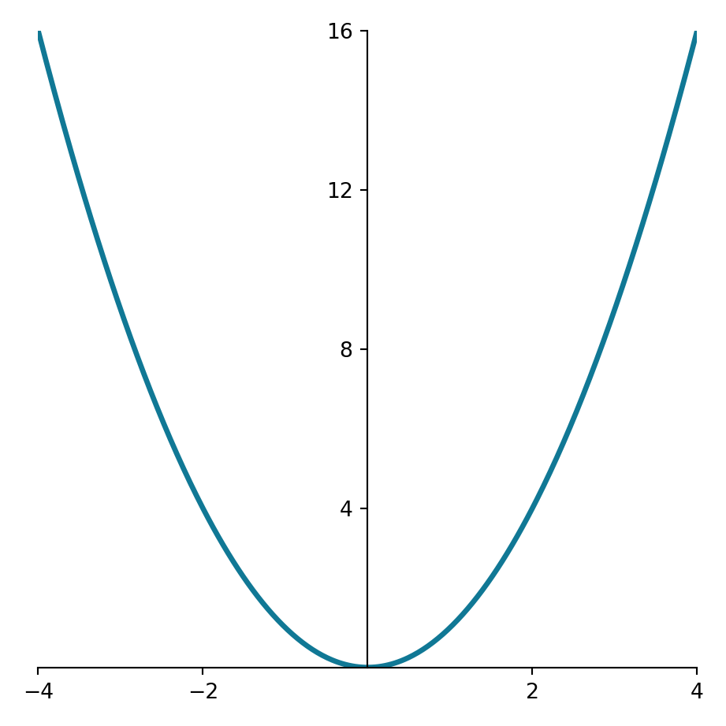
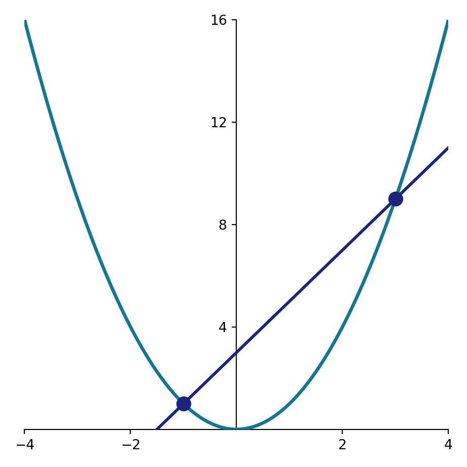
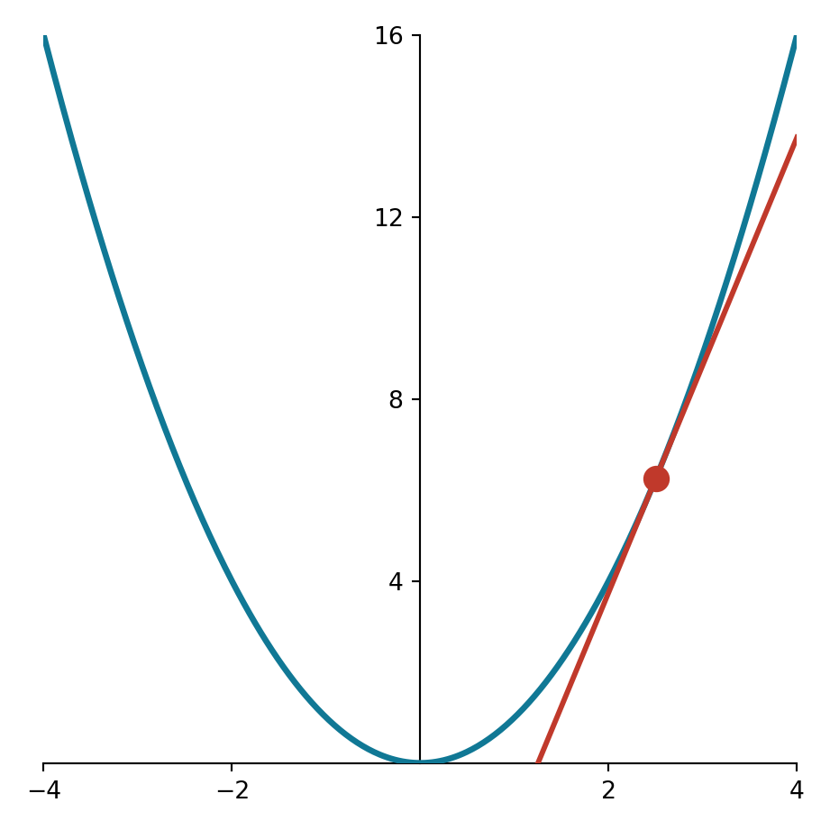
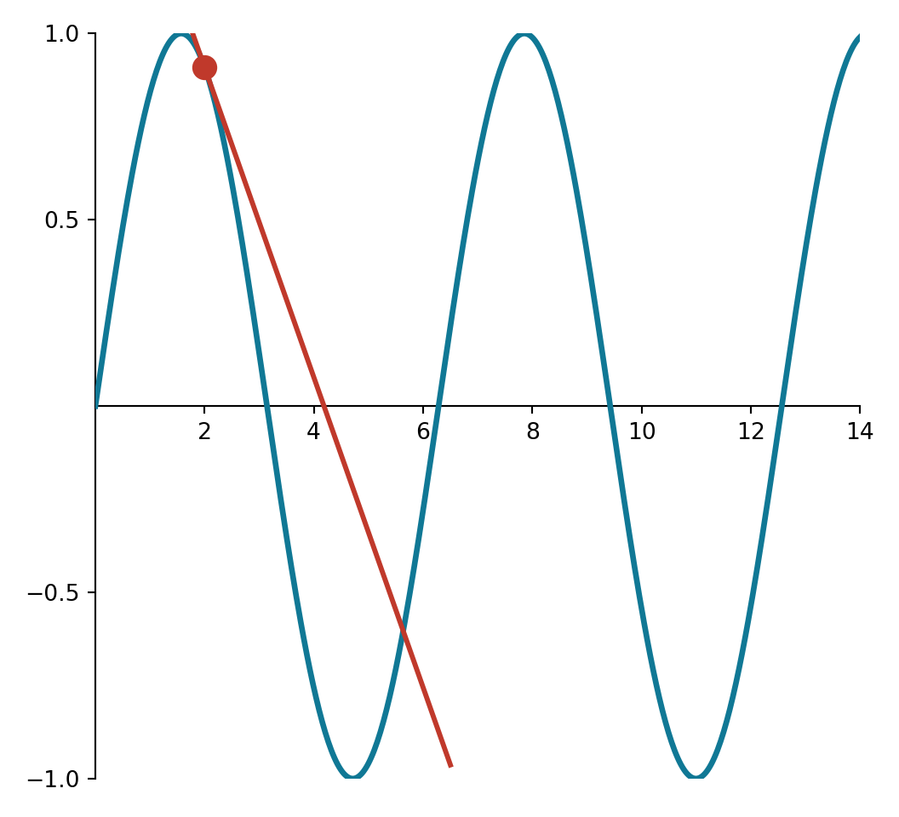
Recta secante
pasa a través de dos puntos.
Recta tangente
pasa a través de un punto.
Interpretación de gráficas de derivadas
En este presentación, aprenderás:
Cómo interpretar gráficas de derivadas.
Que las gráficas de las funciones y sus derivadas no se ven necesariamente iguales.
Gráfico de la función vs derivada
- La gráfica de la función muestra los valores de la función en cada punto del eje x.
- La gráfica de la derivada muestra la pendiente de la recta tangente a la función en cada punto del eje x.
Función vs derivada: Ejemplo 1
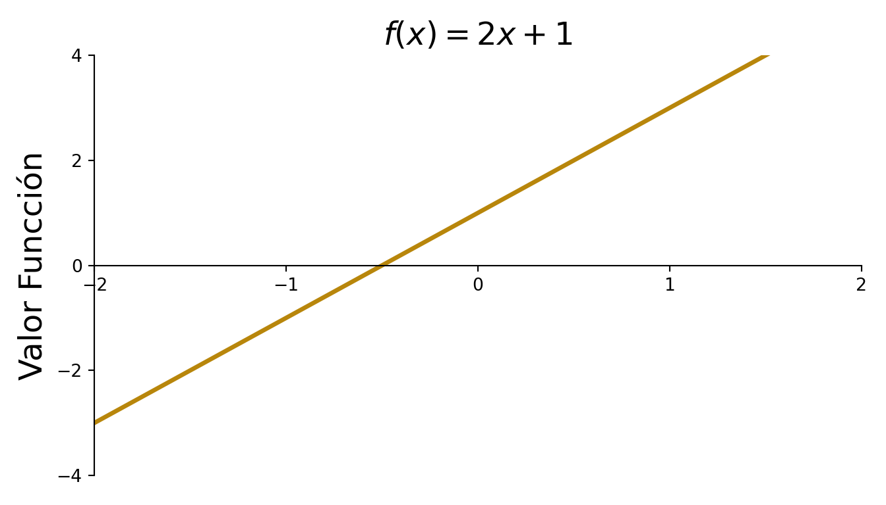
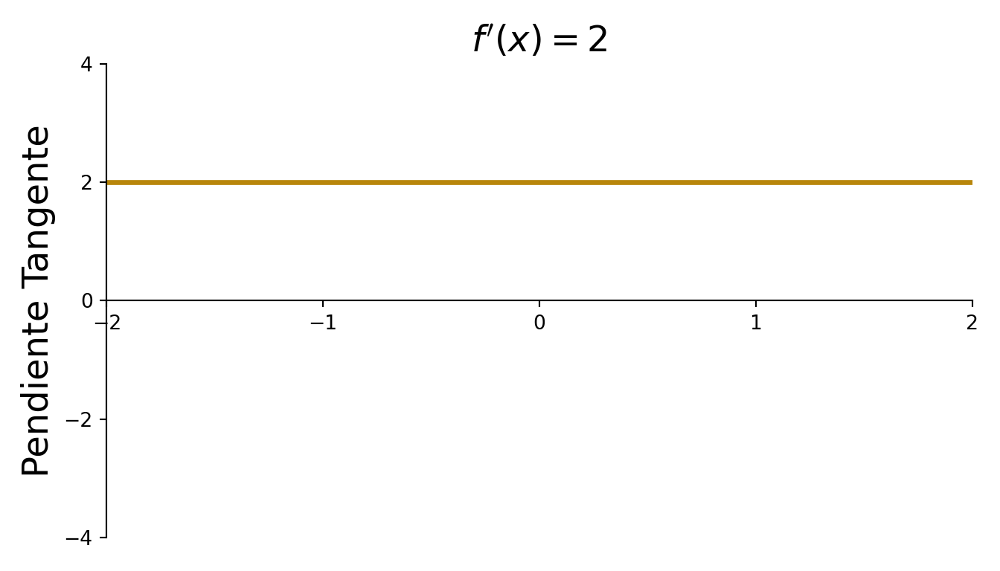
Función vs derivada: Ejemplo 2
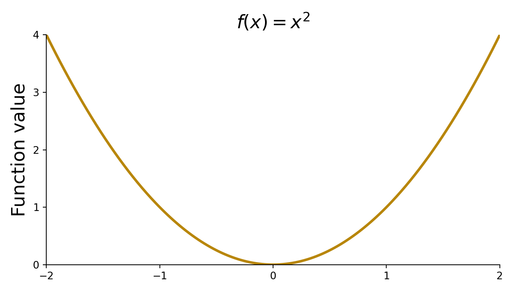
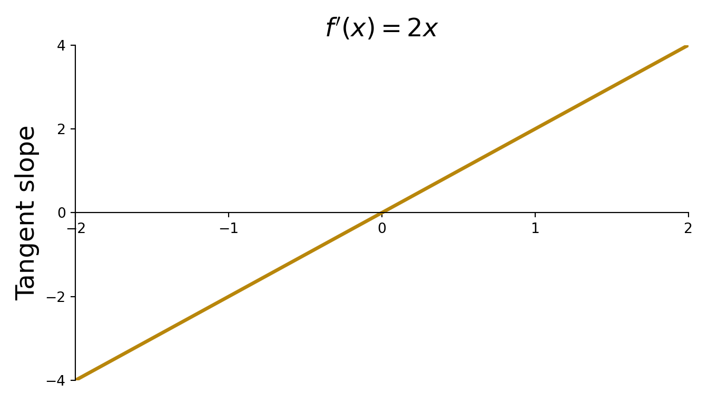
Función vs derivada: Ejemplo 3
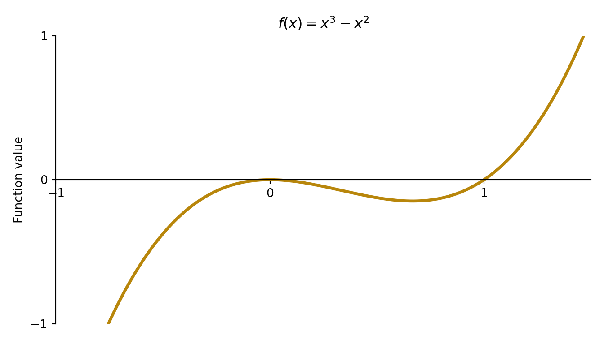
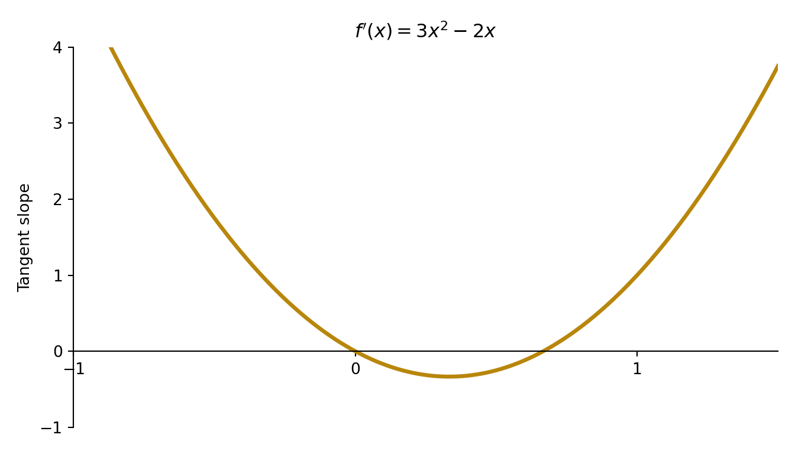
Función vs derivada: Ejemplo 4
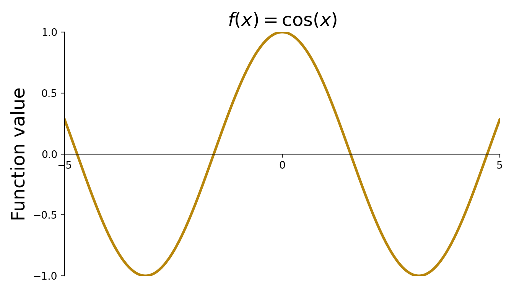
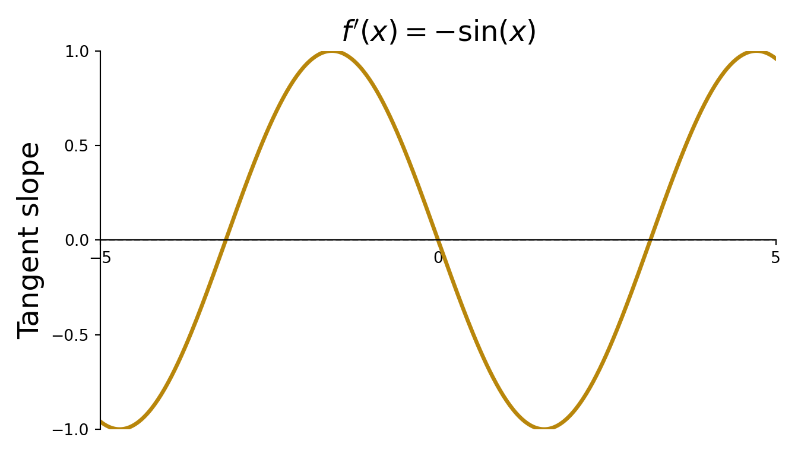
Función vs derivada: Ejemplo 5
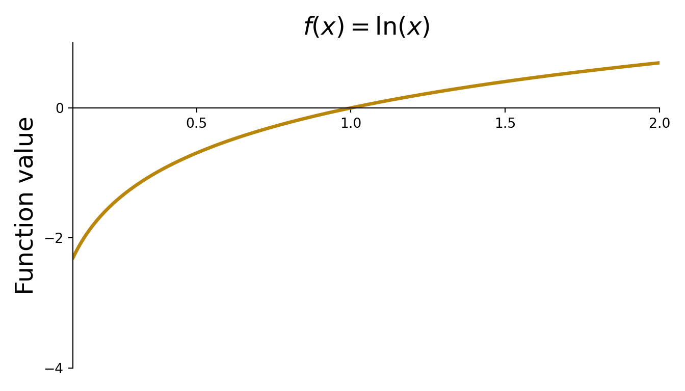
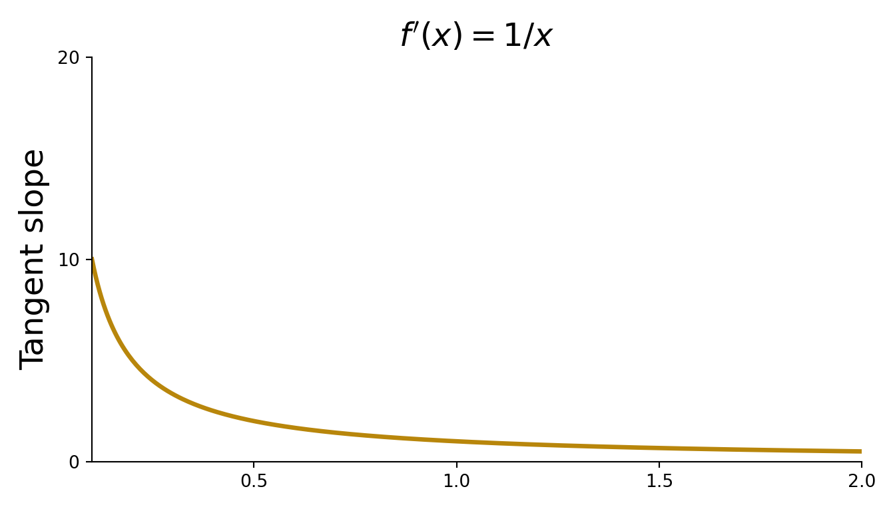
Puntos general a considerar
El signo de la derivada muestra dónde la función es creciente y decreciente.
Los cruces por cero de la derivada se denominan “puntos críticos” e indican cambios cualitativos en la función.
Interpretación de gráficas de derivadas
En esta presentación, has aprendido:
Cómo interpretar gráficas de derivadas.
Que las gráficas de las funciones y sus derivadas no se ven necesariamente iguales.
Derivadas de polinomios
En esta presentación, aprenderás
Un truco simple para calcular la derivada de expresiones polinómicas.
Que este “truco simple” en realidad se llama la “regla de la potencia.”
Que las derivadas de polinomios pares son polinomios impares, y viceversa.
Derivadas de Polinomios
\[f({\color{teal} x}) = {\color{goldenrod} c}{\color{teal} x}^{\color{red} r}\]
\[f'({\color{teal} x}) = {\color{red} r}{\color{goldenrod} c}{\color{teal} x}^{{\color{red} r}-1}\]
Derivada de polinomios:
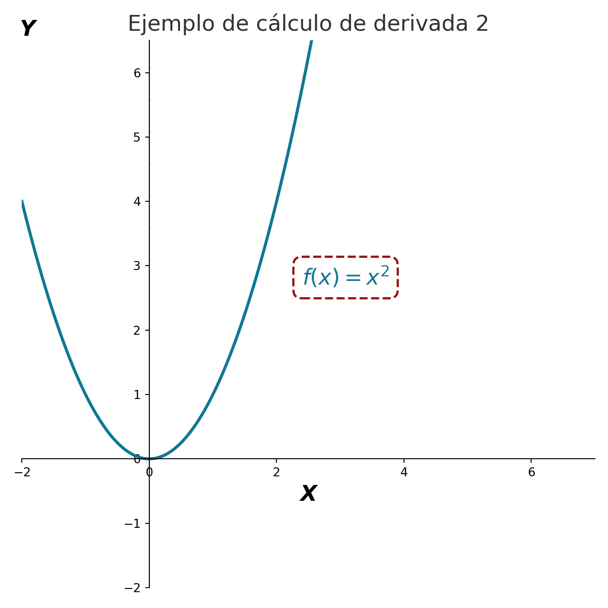
\[\frac{d{\color{goldenrod} y}}{d{\color{teal} x}} = \lim_{h \to 0} f(x) = \left[\frac{({\color{teal} x}+h)^2 - {\color{teal} x}^2}{h}\right]\]
\[= \left[\frac{{\color{teal} x}^2 + 2{\color{teal} x}h + h^2 - {\color{teal} x}^2}{h}\right]\]
\[= \left[\frac{h(2{\color{teal} x} + h)}{h}\right]\]
\[= 2{\color{teal} x} + h = 2{\color{teal} x}\]
\[\frac{d{\color{goldenrod} y}}{d{\color{teal} x}} = 2{\color{teal} x}\]
Derivada de polinomios:
\[\frac{d}{d{\color{teal}x}}\left(3{\color{teal}x}^4\right) =\]
\[\frac{d}{d{\color{teal}x}}\left(3{\color{teal}x}^4\right) = 12{\color{teal}x}^3\]
\[\frac{d}{d{\color{teal}x}}\left(3{\color{teal}x}^4 + 2.5{\color{teal}x}^3 - 7{\color{teal}x}^2 + {\color{teal}x} + 10\right) =\]
\[\frac{d}{d{\color{teal}x}}\left(3{\color{teal}x}^4 + 2.5{\color{teal}x}^3 - 7{\color{teal}x}^2 + {\color{teal}x} + 10\right) = 12{\color{teal}x}^3 + 7.5{\color{teal}x}^2 - 14{\color{teal}x} + 1 + 0\]
Derivada de compuestos o productos
\[f({\color{teal}x}) = \sin^3({\color{teal}x}^2)\]
\[f({\color{teal}x}) = 4{\color{teal}x}^3 e^{\sqrt{{\color{teal}x}}}\]
Derivada de polinomios1:
\[\frac{d}{d{\color{teal}x}}\left(-4{\color{teal}x}^2 + 3{\color{teal}x}^5 - \pi\right) =\]
\[\frac{d}{d{\color{teal}x}}\left(-4{\color{teal}x}^2 + 3{\color{teal}x}^5 - \pi\right) = -8{\color{teal}x} + 15{\color{teal}x}^4\]
\[\frac{d}{d{\color{teal}x}}\left(e^\pi {\color{teal}x}^2 - \pi^e {\color{teal}x}^4\right) =\]
\[\frac{d}{d{\color{teal}x}}\left(e^\pi {\color{teal}x}^2 - \pi^e {\color{teal}x}^4\right) = 2e^\pi {\color{teal}x} - 4\pi^e {\color{teal}x}^3\]
Derivada de polinomios2:
\({\color{goldenrod}f}({\color{teal}x}) = 2{\color{teal}x}^3\)
\(\frac{d{\color{goldenrod}y}}{d{\color{teal}x}} = \lim_{{\color{maroon}h}\to 0}\left[\frac{2({\color{teal}x}+{\color{maroon}h})^3 - 2{\color{teal}x}^3}{{\color{maroon}h}}\right]\)
\(= \lim_{{\color{maroon}h}\to 0}\left[\frac{2({\color{teal}x}+{\color{maroon}h})({\color{teal}x}+{\color{maroon}h})({\color{teal}x}+{\color{maroon}h}) - 2{\color{teal}x}^3}{{\color{maroon}h}}\right]\)
\(= \lim_{{\color{maroon}h}\to 0}\left[\frac{2({\color{teal}x}^2+{\color{maroon}h}^2+2{\color{teal}x}{\color{maroon}h})({\color{teal}x}+{\color{maroon}h}) - 2{\color{teal}x}^3}{{\color{maroon}h}}\right]\)
\(= \lim_{{\color{maroon}h}\to 0}\left[\frac{2({\color{teal}x}^3+{\color{teal}x}^2{\color{maroon}h}+{\color{maroon}h}^2{\color{teal}x}+{\color{maroon}h}^3+2{\color{teal}x}^2{\color{maroon}h}+2{\color{teal}x}{\color{maroon}h}^2) - 2{\color{teal}x}^3}{{\color{maroon}h}}\right]\)
\(= \lim_{{\color{maroon}h}\to 0}\left[\frac{2{\color{teal}x}^3+2{\color{teal}x}^2{\color{maroon}h}+2{\color{teal}x}{\color{maroon}h}^2+2{\color{maroon}h}^3+4{\color{teal}x}^2{\color{maroon}h}+4{\color{teal}x}{\color{maroon}h}^2 - 2{\color{teal}x}^3}{{\color{maroon}h}}\right]\)
\(= \lim_{{\color{maroon}h}\to 0}\left[\frac{{\color{maroon}h}(2{\color{teal}x}^2+2{\color{teal}x}{\color{maroon}h}+2{\color{maroon}h}^2+4{\color{teal}x}^2+4{\color{teal}x}{\color{maroon}h})}{{\color{maroon}h}}\right]\)
\(= \lim_{{\color{maroon}h}\to 0} 6{\color{teal}{x}}^2 +{\color{maroon}{h}}(6{\color{teal}{x}}+2 {\color{maroon}{h}})=6x\)
Regla de la potencia
\[f({\color{teal}x}) = {\color{goldenrod}c}{\color{teal}x}^{\color{red}r}\]
\[f'({\color{teal}x}) = {\color{red}r}{\color{goldenrod}c}{\color{teal}x}^{{\color{red}r}-1}\]
Paridad alterna de las derivadas de polinomios
Un polinomiopartiene una derivadaimpar.
Un polinomioimpartiene una derivadapar.
Paridad alterna de las derivadas de polinomios: Ejemplo
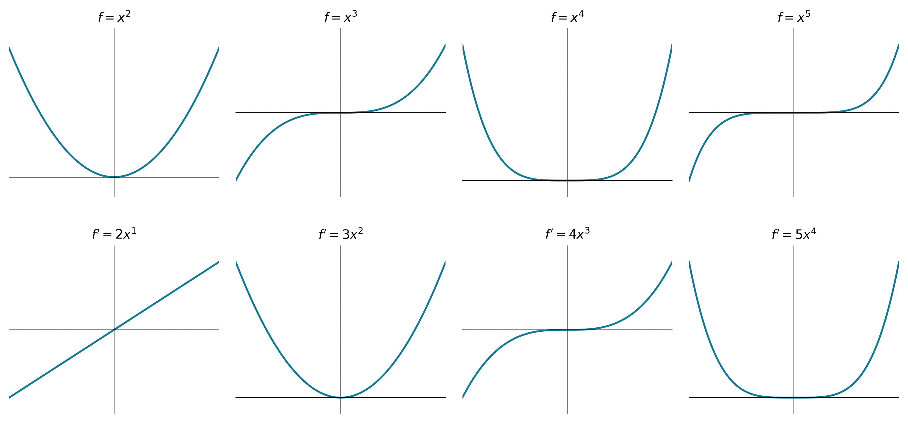
Derivada de polinomios
En esta presentación aprendiste
Un truco simple para calcular la derivada de expresiones polinómicas.
Que este “truco simple” en realidad se llama la “regla de la potencia.”
Que las derivadas de polinomios pares son polinomios impares, y viceversa.
Linealidad de la diferenciación
En esta presentación, aprenderás:
Que la diferenciación es una operación lineal, lo que significa que los múltiplos escalares y las sumas se pueden separar.
Cómo demostrar la linealidad en SymPy.
Linealidad de la diferenciación
\[\frac{d}{d{\color{teal} x}}\left[{\color{goldenrod} a}f({\color{teal} x}) + {\color{red} b}g({\color{teal} x})\right]\]
\[{\color{goldenrod} a}f'({\color{teal} x}) + {\color{red} b}g'({\color{teal} x})\]
Ejercicio 1: Derivado de terminos sumados
\[{\color{goldenrod} f}({\color{teal} x}) = {\color{goldenrod} a}{\color{teal} x}^2 + {\color{red} b}{\color{teal} x}^3 + {\color{blue} c}e^{2{\color{teal} x}}\]
Derivative of combined function: \(2ax + 3bx^2 + 2ce^{2x}\)
Derivative of \(ax^2\) is \(2ax\)
Derivative of \(bx^3\) is \(3bx^2\)
Derivative of \(ce^{2x}\) is \(2ce^{2x}\)
Combination of individual components: \(2ax + 3bx^2 + 2ce^{2x}\)
Taller 1: de programación: Linealidad de la diferenciación
import numpy as np
import sympy as sym
import matplotlib.pyplot as plt
from IPython.display import Math,display
# two functions and two scalars
x,a,b,c = sym.symbols('x,a,b,c')
# one function with summed terms
fun = a*x**2 + b*x**3 + c*sym.exp(2*x)
# derivative
display(Math('\\text{Derivative of combined function: }%s' %sym.latex(sym.diff(fun,x))))
print('\n')
combined = ''
for piece in fun.args:
display(Math('\\text{Derivative of } %s \\text{ is } %s'
%(sym.latex(piece),sym.latex(sym.diff(piece,x)))))
combined += sym.latex(sym.diff(piece,x)) + ' + '
print('\n')
display(Math('\\text{Combination of individual components: }%s' %combined[:-2]))Resultado de la ejecución:
\[\text{Derivative of combined function: }2 a x + 3 b x^{2} + 2 c e^{2 x}\]
\[\text{Derivative of } a x^{2} \text{ is } 2 a x\]
\[\text{Derivative of } b x^{3} \text{ is } 3 b x^{2}\]
\[\text{Derivative of } c e^{2 x} \text{ is } 2 c e^{2 x}\]
\[\text{Combination of individual components: }2 a x + 3 b x^{2} + 2 c e^{2 x}\]
Ejercicio 2: Múltiplos escalares
\[\frac{d}{d{\color{teal} x}}\left({\color{goldenrod} a}{\color{teal} x}^2\right) = {\color{goldenrod} a}\left(\frac{d}{d{\color{teal} x}}{\color{teal} x}^2\right)\]
Taller 2: de programación: Linealidad de la diferenciación
import sympy as sym
print("f'[ax**2] :")
print(sym.diff( a*x**2 ,x))
print(' ')
print("a * f'[x**2] :")
print(a*sym.diff( x**2 ,x))Resultado de la ejecución:
\[\frac{d}{dx}\bigl[a x^{2}\bigr] = 2 a x\]
\[a \cdot \frac{d}{dx}\bigl[x^{2}\bigr] = 2 a x\]
Ejercicio 3: Prueba de linealidad completa
\[\frac{d}{d{\color{teal} x}}\left({\color{goldenrod} a}{\color{teal} x}^2 + {\color{red} b}\cos{\color{teal} x}\right) = {\color{goldenrod} a}\frac{d}{d{\color{teal} x}}\left({\color{teal} x}^2\right) + {\color{red} b}\frac{d}{d{\color{teal} x}}\left(\cos{\color{teal} x}\right)\]
Taller 3: de programación: Linealidad de la diferenciación
import numpy as np
import sympy as sym
import matplotlib.pyplot as plt
from IPython.display import Math,display
display(Math("\\frac{d}{dx}(ax^2 + b\\cos(x)) = %s"
%sym.latex(sym.diff( a*x**2 + b*sym.cos(x) ,x))))
print('\n')
display(Math("a\\frac{d}{dx}(x^2) + b\\frac{d}{dx}(\\cos(x)) = %s"
%sym.latex(a*sym.diff(x**2,x) + b*sym.diff(sym.cos(x),x) ) ))Resultado de la ejecución:
\[\frac{d}{dx}(ax^2 + b\cos(x)) = 2 a x - b \sin{\left(x \right)}\]
\[a\frac{d}{dx}(x^2) + b\frac{d}{dx}(\cos(x)) = 2 a x - b \sin{\left(x \right)}\]
¿Por qué la diferenciación es lineal?
La demostración está en la siguiente sección :)
Presentación “Linealidad de la diferenciación (demostración)”
Derivadas de coseno y seno
En esta presentación, aprenderás:
El “círculo” de las derivadas trigonométricas.
Intuición geométrica para las derivadas de seno y coseno.
Que las demostraciones de derivadas pueden ser tediosas…
Derivadas circulares
\[[\cos({\color{teal}x})]' = -\sin({\color{teal}x})\]
\[[-\sin({\color{teal}x})]' = -\cos({\color{teal}x})\]
\[[-\cos({\color{teal}x})]' = \sin({\color{teal}x})\]
\[[\sin({\color{teal}x})]' = \cos({\color{teal}x})\]
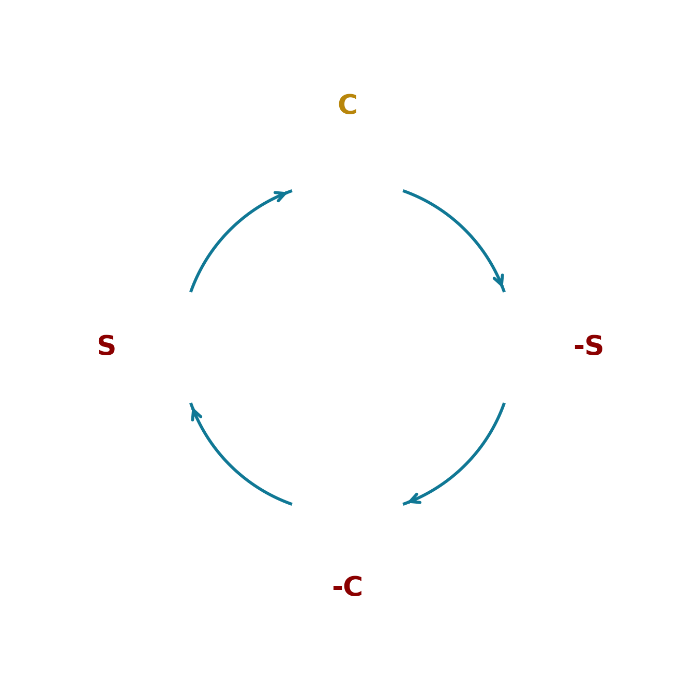
Intuición geométrica seno y coseno
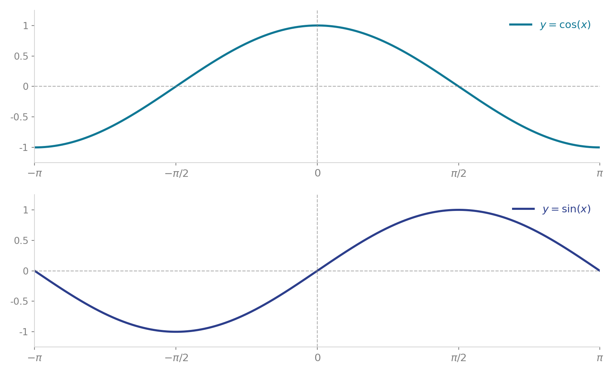
Demostración de que cos’(x) = -sin(x)
\[{\color{goldenrod}f}({\color{teal}x}) = \cos({\color{teal}x})\]
\[\frac{d{\color{goldenrod}y}}{d{\color{teal}x}} = \lim_{{\color{maroon}h}\to 0}\left[\frac{\cos({\color{teal}x}+{\color{maroon}h}) - \cos({\color{teal}x})}{{\color{maroon}h}}\right]\]
\[= \lim_{{\color{maroon}h}\to 0}\left[\frac{\cos({\color{teal}x})\cos({\color{maroon}h}) - \sin({\color{teal}x})\sin({\color{maroon}h}) - \cos({\color{teal}x})}{{\color{maroon}h}}\right]\]
\[= \lim_{{\color{maroon}h}\to 0}\left[\frac{\cos({\color{teal}x})\cos({\color{maroon}h}) - \cos({\color{teal}x}) - \sin({\color{teal}x})\sin({\color{maroon}h})}{{\color{maroon}h}}\right]\]
\[= \lim_{{\color{maroon}h}\to 0}\left[\frac{\cos({\color{teal}x})(\cos({\color{maroon}h}) - 1) - \sin({\color{teal}x})\sin({\color{maroon}h})}{{\color{maroon}h}}\right]\]
Demostración de que cos’(x) = -sin(x)
\[= \lim_{{\color{maroon}h}\to 0}\left[\frac{\cos({\color{teal}x})(\cos({\color{maroon}h}) - 1) - \sin({\color{teal}x})\sin({\color{maroon}h})}{{\color{maroon}h}}\right]\]
\[= \lim_{{\color{maroon}h}\to 0}\left[\frac{\cos({\color{teal}x})(\cos({\color{maroon}h}) - 1)}{{\color{maroon}h}}\right] - \lim_{{\color{maroon}h}\to 0}\left[\frac{\sin({\color{teal}x})\sin({\color{maroon}h})}{{\color{maroon}h}}\right]\]
\[= \cos({\color{teal}x})\lim_{{\color{maroon}h}\to 0}\left[\frac{\cos({\color{maroon}h}) - 1}{{\color{maroon}h}}\right] - \sin({\color{teal}x})\lim_{{\color{maroon}h}\to 0}\left[\frac{\sin({\color{maroon}h})}{{\color{maroon}h}}\right]\]
\[= \cos({\color{teal}x})\times 0 - \sin({\color{teal}x})\times 1\]
\[= -\sin({\color{teal}x})\]
Demostración de que sin’(x) = cos(x)
\[{\color{goldenrod}f}({\color{teal}x}) = \sin({\color{teal}x})\]
\[\frac{d{\color{goldenrod}y}}{d{\color{teal}x}} = \lim_{{\color{maroon}h}\to 0}\left[\frac{\sin({\color{teal}x}+{\color{maroon}h}) - \sin({\color{teal}x})}{{\color{maroon}h}}\right]\]
\[= \lim_{{\color{maroon}h}\to 0}\left[\frac{\sin({\color{teal}x})\cos({\color{maroon}h}) + \cos({\color{teal}x})\sin({\color{maroon}h}) - \sin({\color{teal}x})}{{\color{maroon}h}}\right]\]
\[= \lim_{{\color{maroon}h}\to 0}\left[\frac{\sin({\color{teal}x})\cos({\color{maroon}h}) - \sin({\color{teal}x}) + \cos({\color{teal}x})\sin({\color{maroon}h})}{{\color{maroon}h}}\right]\]
\[= \lim_{{\color{maroon}h}\to 0}\left[\frac{\sin({\color{teal}x})(\cos({\color{maroon}h}) - 1) + \cos({\color{teal}x})\sin({\color{maroon}h})}{{\color{maroon}h}}\right]\]
Demostración de que sin’(x) = cos(x) parte 2
\[= \lim_{{\color{maroon}h}\to 0}\left[\frac{\sin({\color{teal}x})(\cos({\color{maroon}h}) - 1) + \cos({\color{teal}x})\sin({\color{maroon}h})}{{\color{maroon}h}}\right]\]
\[= \sin({\color{teal}x})\lim_{{\color{maroon}h}\to 0}\left[\frac{\cos({\color{maroon}h}) - 1}{{\color{maroon}h}}\right] + \cos({\color{teal}x})\lim_{{\color{maroon}h}\to 0}\left[\frac{\sin({\color{maroon}h})}{{\color{maroon}h}}\right]\]
\[= \sin({\color{teal}x})\times 0 + \cos({\color{teal}x})\times 1\]
\[= \cos({\color{teal}x})\]
Qué pasa con las otras funciones trigonometricas?

Derivadas de valor absoluto y raíz cuadrada
En esta presentación, aprenderás
Derivadas de dos funciones comunes adicionales.
La notación y definición de la función “signum” (signo).
Una pista sobre la regla de la potencia.
Derivada de la función valor absoluto
\[{\color{goldenrod}f}({\color{teal}x}) = |{\color{teal}x}|\]
\[= \begin{cases} -{\color{teal}x} & \text{if } {\color{teal}x} < 0 \\ {\color{teal}x} & \text{if } {\color{teal}x} \geq 0 \end{cases}\]
\[{\color{goldenrod}f}'({\color{teal}x}) = \text{sgn}({\color{teal}x})\]
\[= \begin{cases} -1 & \text{if } {\color{teal}x} < 0 \\ 1 & \text{if } {\color{teal}x} > 0 \\ \phantom{\text{d.n.e.}} & \text{if } {\color{teal}x} = 0 \end{cases}\]
\[= \begin{cases} -1 & \text{if } {\color{teal}x} < 0 \\ 1 & \text{if } {\color{teal}x} > 0 \\ \text{n.existe.} & \text{if } {\color{teal}x} = 0 \end{cases}\]
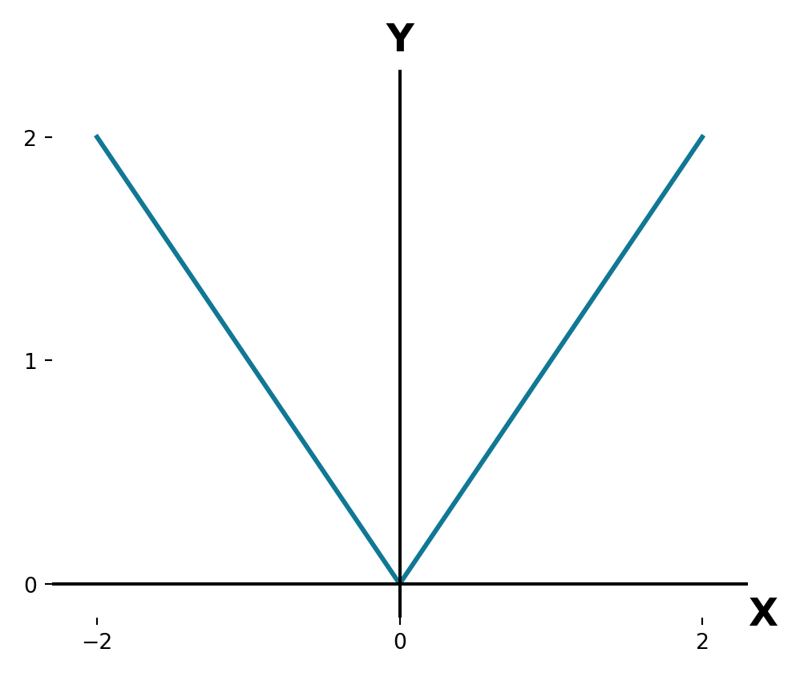
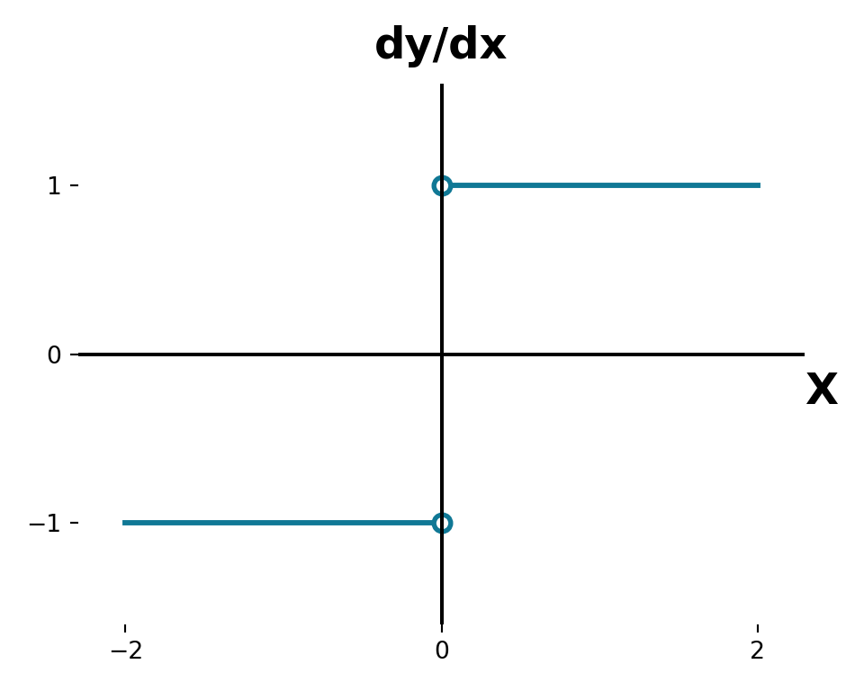
Definicón de la función signo (signum)
\[\text{sgn} = \begin{cases} -1 & \text{if } {\color{teal}x} < 0 \\ 1 & \text{if } {\color{teal}x} > 0 \\ 0 & \text{if } {\color{teal}x} = 0 \end{cases}\]
\[\text{sgn} = \frac{|{\color{teal}x}|}{{\color{teal}x}}\]
Derivada de la función raíz cuadrada
\[{\color{goldenrod}f}({\color{teal}x}) = \sqrt{{\color{teal}x}}\]
\[= {\color{teal}x}^{1/2}\]
\[{\color{goldenrod}f}'({\color{teal}x}) = \frac{1}{2\sqrt{{\color{teal}x}}}\]
\[= \tfrac{1}{2}\,{\color{teal}x}^{-1/2}\]
Regla de la potencia
\[f({\color{teal}x}) = {\color{goldenrod}c}{\color{teal}x}^{\color{red}r}\]
\[f'({\color{teal}x}) = {\color{red}r}{\color{goldenrod}c}{\color{teal}x}^{{\color{red}r}-1}\]
Derivada de la función raíz cuadrada
\[{\color{goldenrod}f}({\color{teal}x}) = \sqrt{{\color{teal}x}}\]
\[= {\color{teal}x}^{1/2}\]
\[{\color{goldenrod}f}'({\color{teal}x}) = \frac{1}{2\sqrt{{\color{teal}x}}}\]
\[= \tfrac{1}{2}\,{\color{teal}x}^{-1/2}\]
Derivadas de log y exp
En esta presentación, aprenderás:
La derivada del logaritmo natural.
La derivada del logaritmo en cualquier otra base.
La derivada de exp(x).
Derivadas de log y exp:
\[{\color{goldenrod}f}({\color{teal}x}) = \ln({\color{teal}x})\]
\[{\color{goldenrod}f}' = \frac{1}{{\color{teal}x}}\]
\[{\color{goldenrod}f}({\color{teal}x}) = \log_{\color{red}B}({\color{teal}x})\]
\[{\color{goldenrod}f}' = \frac{1}{{\color{teal}x}\ln({\color{red}B})}\]
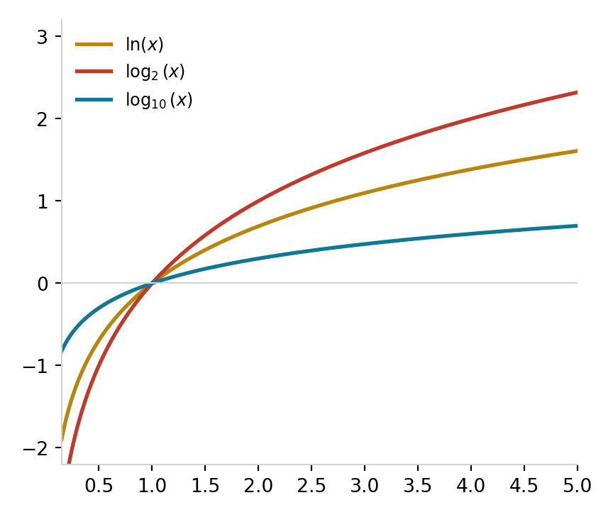
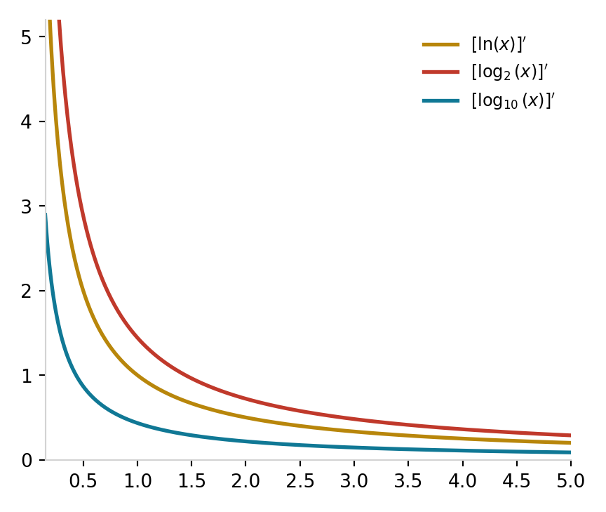
Derivada de \(e^x\)
\[{\color{goldenrod}f}({\color{teal}x}) = e^{\color{teal}x}\]
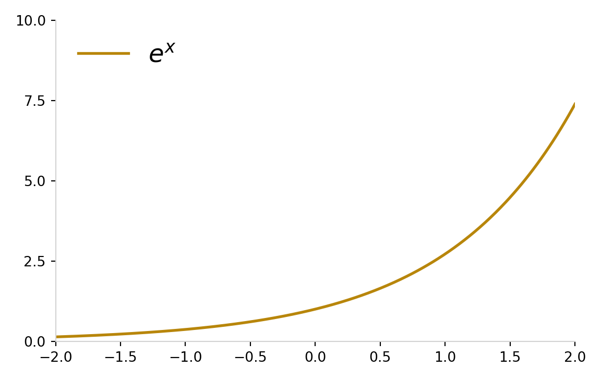
\[{\color{goldenrod}f}' = e^{\color{teal}x}\]
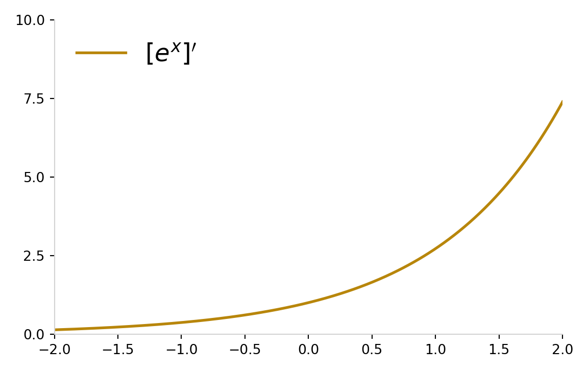
Dato interesante sobre \(e^x\)
- exp(x) es la única función que es igual a su derivada.
(Excepto por y=0, pero eso es realmente y=0ex)
(La demostración se basa en integración.)
Puntos criticos: definiciones y aplicaciones
En este video, aprenderás
Qué hace que un punto sea “crítico.”
Los diferentes tipos de puntos críticos.
Por qué los puntos críticos son importantes en el cálculo.
Ejemplos de puntos criticos?
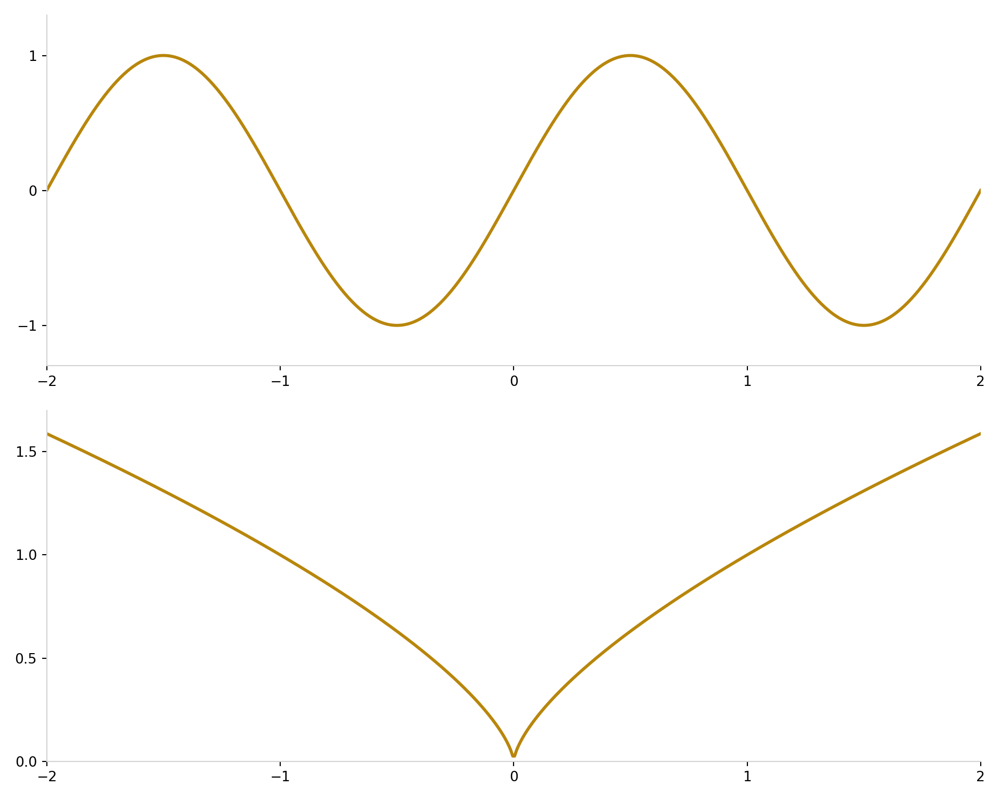
Qué son los puntos criticos?
- Puntos de una función donde la derivada es indefinida o igual a 0 (f’=0), y la función está definida.
- Geométricamente, son los valores del eje x donde la pendiente es una línea horizontal o no existe.
Punto crítico: La coordenada del eje x.
Valor crítico: El valor de la función en el eje y (¡no el valor de la derivada!).
Como encontrar puntos criticos?
Algebraico:
- Calcular la derivada y resolver para f’(x)=0.
- Inspeccionar la función en busca de discontinuidades.
Geométrico:
Observar la gráfica en busca de curvaturas o discontinuidades.
Tipos de puntos críticos


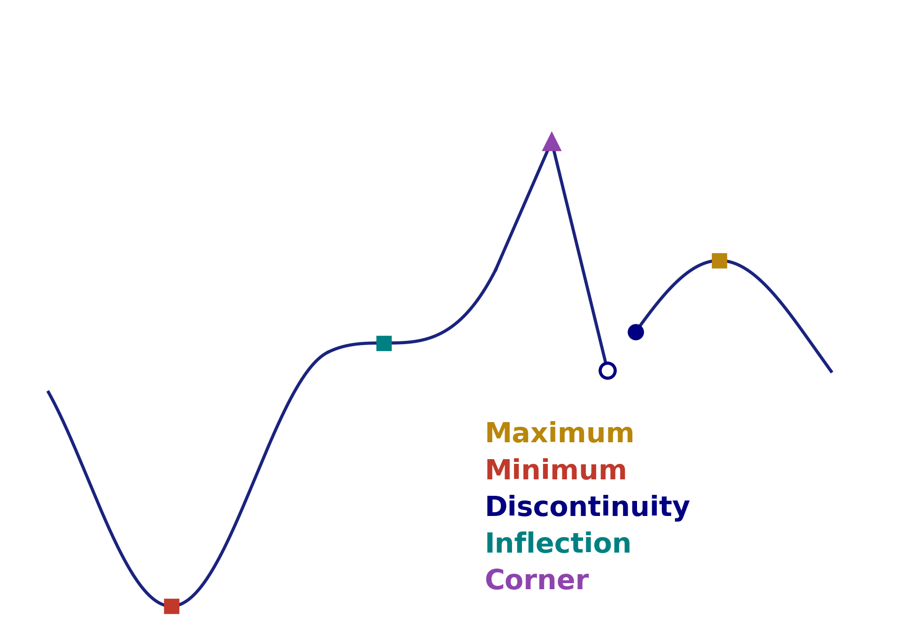
Porqué son utiles los puntos criticos?
Ayudan a caracterizar una función (e.g., para bosquejar su gráfica).
Se usan en optimización (minimizar errores/costos, maximizar área/ganancias).
Puntos críticos en derivadas superiores.?
¡Super importante!
Los puntos críticos de derivadas de orden superior (\(f''=0\)) indican puntos de inflexión.
Más sobre esto en la siguiente sección :)
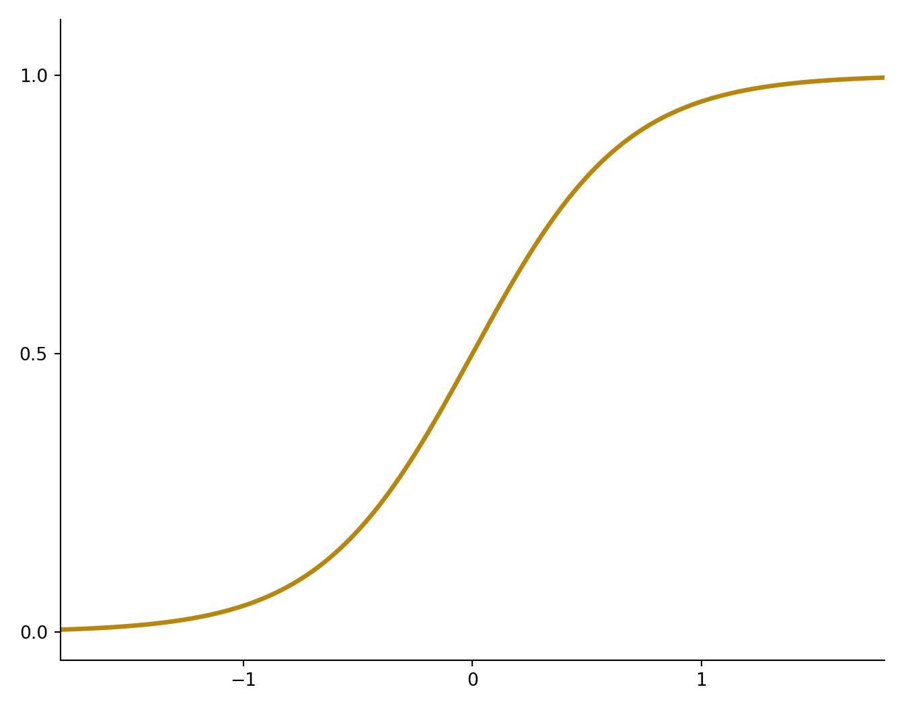
Ejemplo: 1
\[f({\color{teal}x}) = 3{\color{teal}x} + 6\]
\[f'({\color{teal}x}) = 3\]
\[3 = 0\]
La derivada nunca es 0 y siempre está definida.
¡No hay puntos críticos!
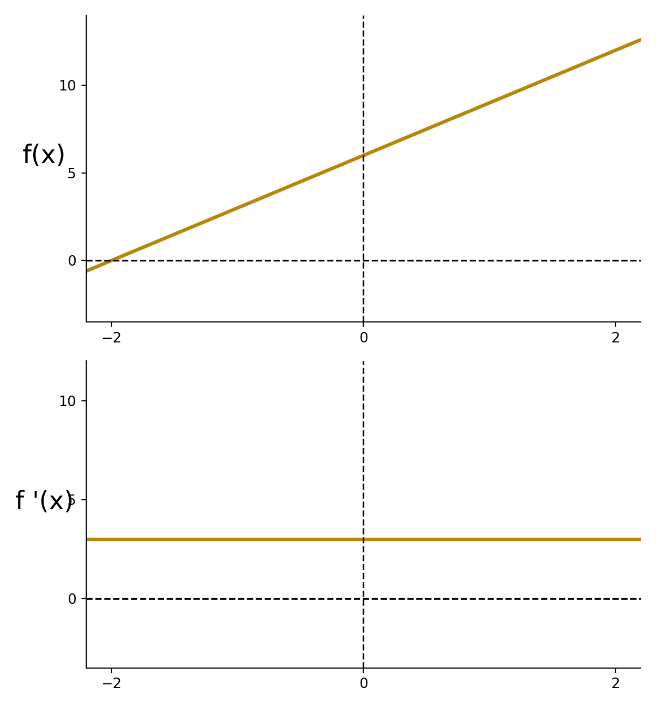
Ejemplo: 2
\[f({\color{teal}x}) = 3{\color{teal}x}^2 + 2\]
\[f'({\color{teal}x}) = 6{\color{teal}x}\]
\[6{\color{teal}x} = 0\]
\[{\color{teal}x} = 0\]
Un punto crítico en \(x=0\).
Punto crítico/valor: \((0,\,2)\)
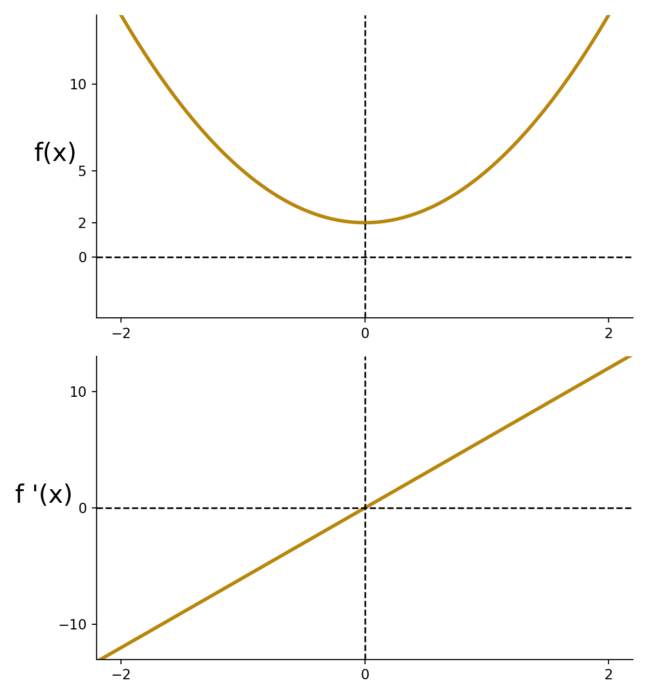
Ejemplo: 3
\[f({\color{teal}x}) = \cos({\color{teal}x})\]
\[f'({\color{teal}x}) = -\sin({\color{teal}x})\]
\[\sin({\color{teal}x}) = 0\]
\[{\color{teal}x} = {\color{goldenrod}k}\pi, \quad {\color{goldenrod}k} \in \mathbb{Z}\]
¡Infinitos puntos críticos!
Infinitos mínimos/máximos locales.
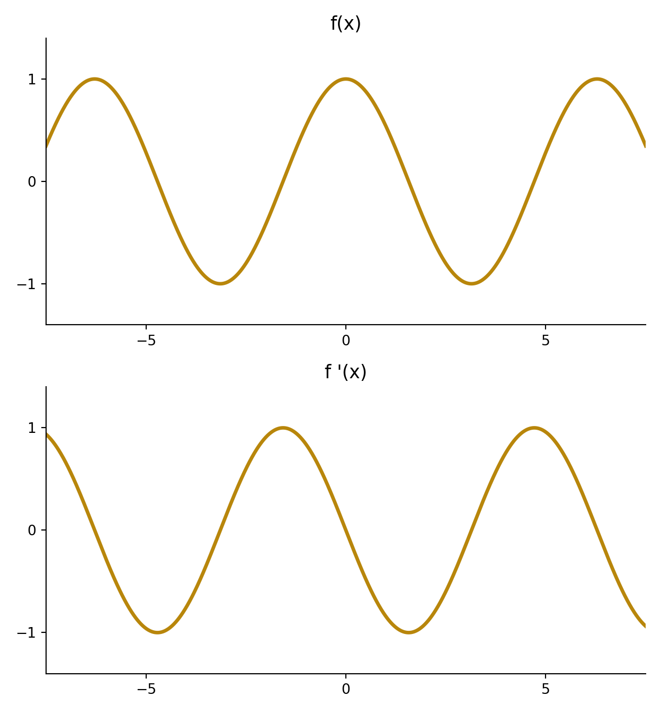
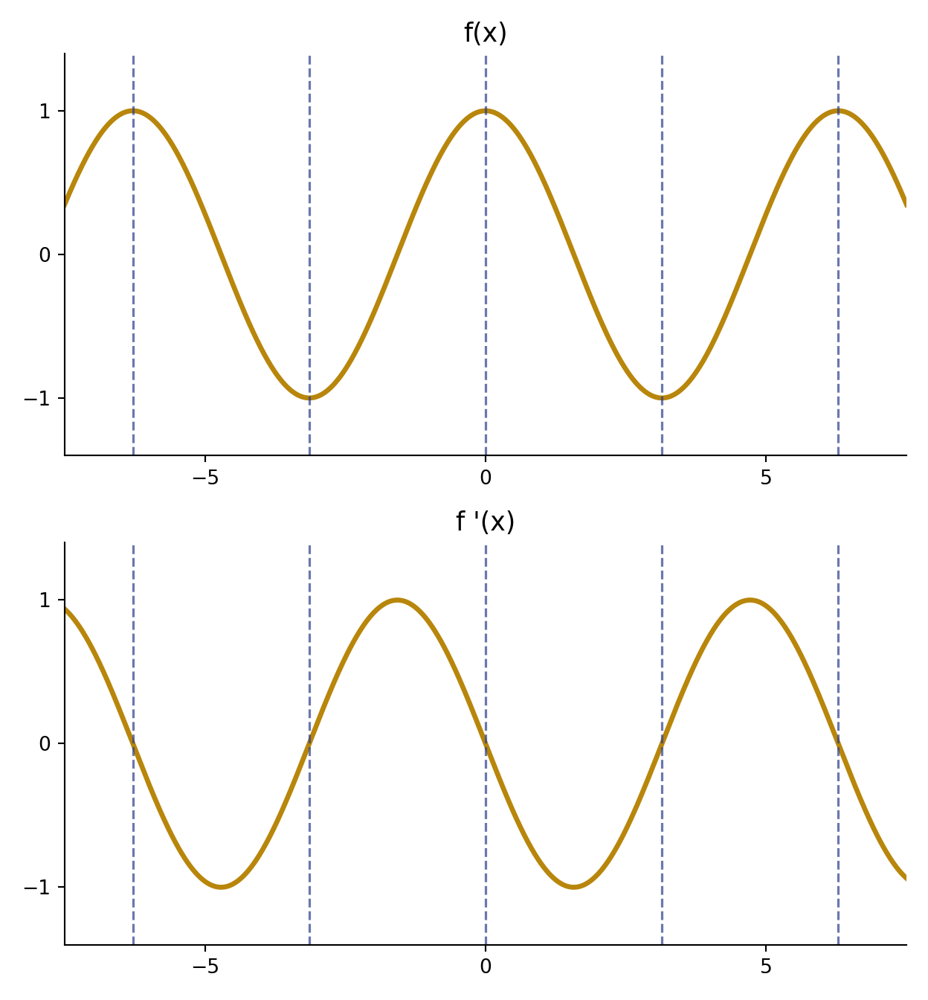
Ejemplo: 4
\[f({\color{teal}x}) = e^{{\color{teal}x}}\]
\[f'({\color{teal}x}) = e^{{\color{teal}x}}\]
\[e^{{\color{teal}x}} = 0\]
La derivada nunca es 0 y siempre está definida.
¡No hay puntos críticos!
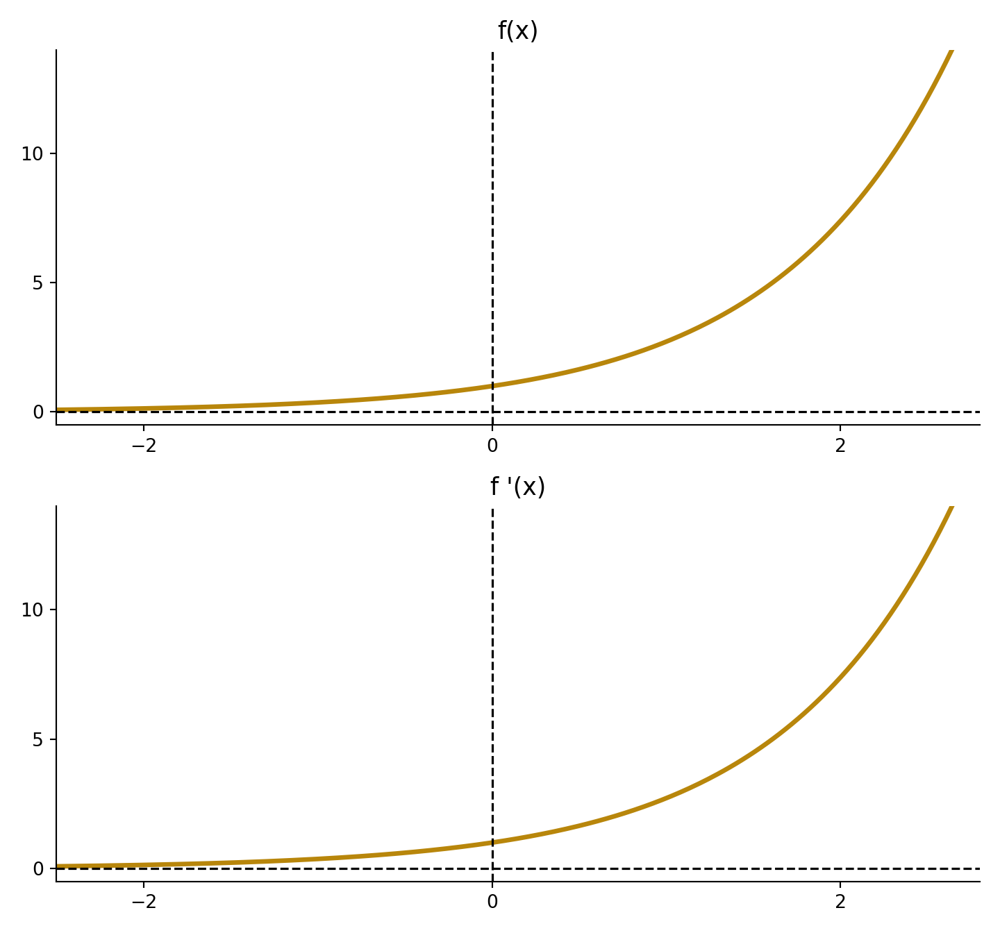
Ejemplo: 5
\[f({\color{teal}x}) = {\color{teal}x}^3 - 2{\color{teal}x}^2 + 1/2\]
\[f'({\color{teal}x}) = 3{\color{teal}x}^2 - 4{\color{teal}x}\]
\[3{\color{teal}x}^2 - 4{\color{teal}x} = 0\]
\[(3{\color{teal}x} - 4){\color{teal}x} = 0 \qquad\quad 3{\color{teal}x} = 4 \qquad\quad {\color{teal}x} = 4/3\]
Puntos críticos en \(x=\{0,\, 4/3\}\).
Puntos críticos/valores: \((0,\,1/2)\), \((4/3,\,-37/54)\)
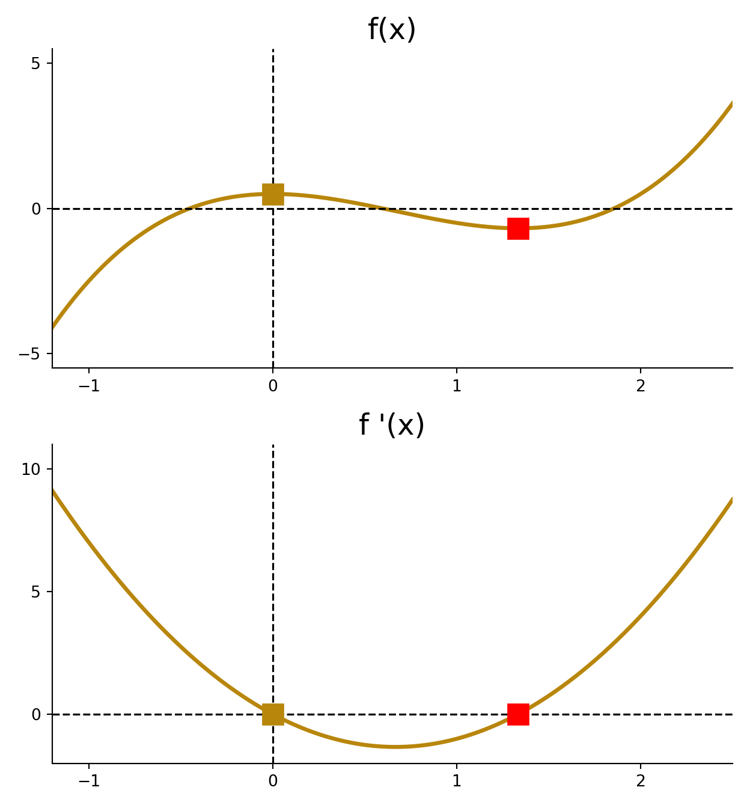
Ejemplo: 6
\[f({\color{teal}x}) = \begin{cases} {\color{teal}x}/2 & \text{if } {\color{teal}x} < 0 \\ {\color{teal}x}^2 + 1 & \text{if } 0 \leq {\color{teal}x} < 3 \\ -\ln({\color{teal}x}) & \text{otherwise} \end{cases}\]
\[f'({\color{teal}x}) = \begin{cases} 1/2 & \text{if } {\color{teal}x} < 0 \\ 2{\color{teal}x} & \text{if } 0 \leq {\color{teal}x} < 3 \\ -1/{\color{teal}x} & \text{otherwise} \end{cases}\]
\(1/2 = 0 \quad\to\) no p.c.
\(2{\color{teal}x} = 0 \quad\to\) p.c. en \({\color{teal}x} = 0\)
\(-1/{\color{teal}x} = 0 \quad\to\) no p.c.
Puntos críticos en \(x=0\). Discontinuidades en \(x=0,\,3\).
Puntos críticos/valores: \((0,\,1)\), \(\bigl(3,\,-\ln 3\bigr)\)
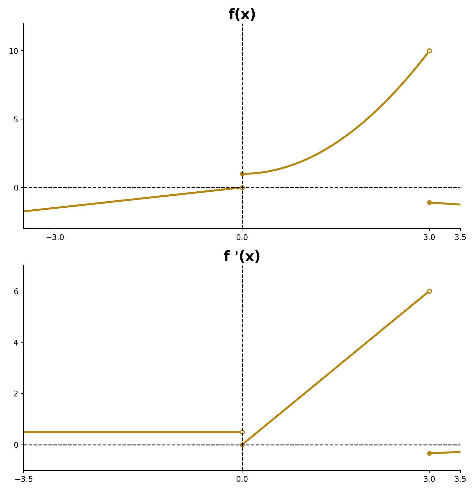
De donde vienen las matemáticas?
¿Las matemáticas son descubiertas o inventadas?
En este presentación, aprenderás
Un antiguo debate filosófico sobre las matemáticas y la naturaleza.
Las posturas dominantes sobre el tema.
¡¡¡LA RESPUESTA VERDADERA DEFINITIVA!!!! (es broma, jajaja)
Las matemáticas son como super gigantes
No cabe duda de que las matemáticas nos permiten entender y controlar la naturaleza.
La pregunta es si las matemáticas existen independientemente de los humanos (y otras inteligencias), o si son inventadas por los humanos para describir y resolver problemas.
Es un debate filosófico que probablemente no puede resolverse, y parece no tener implicaciones para las matemáticas aplicadas.
Posiciones sobre este debate
Las matemáticas son inventadas.
Las matemáticas son descubiertas.
Parcialmente descubiertas, parcialmente inventadas.
Funciona; no me importa.
Las matemáticas son inventadas.
Las matemáticas son descubiertas.
Parcialmente descubiertas, parcialmente inventadas.
Funciona; no me importa.
Las matemáticas son inventadas.
Las matemáticas son descubiertas.
Parcialmente descubiertas, parcialmente inventadas.
Funciona; no me importa.
La naturaleza simplemente ‘es’; las matemáticas son un lenguaje que inventamos para describirla.
Las matemáticas son inventadas.
Las matemáticas son descubiertas.
Parcialmente descubiertas, parcialmente inventadas.
Funciona; no me importa.
La naturaleza simplemente ‘es’; las matemáticas son un lenguaje que inventamos para describirla.
Las matemáticas son un conjunto de estructuras y reglas que inventamos, como el ajedrez o el fútbol o las leyes fiscales.
Las matemáticas son inventadas.
Las matemáticas son descubiertas.
Parcialmente descubiertas, parcialmente inventadas.
Funciona; no me importa.
La naturaleza simplemente ‘es’; las matemáticas son un lenguaje que inventamos para describirla.
Las matemáticas son un conjunto de estructuras y reglas que inventamos, como el ajedrez o el fútbol o las leyes fiscales.
Las personas eligen los éxitos de las matemáticas e ignoran el espacio mucho más grande de matemáticas sin relevancia física.
Las matemáticas son inventadas.
Las matemáticas son descubiertas.
Parcialmente descubiertas, parcialmente inventadas.
Funciona; no me importa.
Las matemáticas son inventadas.
Las matemáticas son descubiertas.
Parcialmente descubiertas, parcialmente inventadas.
Funciona; no me importa.
Las matemáticas son el lenguaje del universo.
Son estructuras que existen independientes de nosotros desde el Big Bang. Como átomos, gravedad, radiación…
Las matemáticas son inventadas.
Las matemáticas son descubiertas.
Parcialmente descubiertas, parcialmente inventadas.
Funciona; no me importa.
Las matemáticas son el lenguaje del universo.
Son estructuras que existen independientes de nosotros desde el Big Bang. Como átomos, gravedad, radiación…
Los humanos han descubierto una fracción de ese lenguaje universal fundamental. (Posibles interpretaciones religiosas.)
Las matemáticas son inventadas.
Las matemáticas son descubiertas.
Parcialmente descubiertas, parcialmente inventadas.
Funciona; no me importa.
Las matemáticas son inventadas.
Las matemáticas son descubiertas.
Parcialmente descubiertas, parcialmente inventadas.
Funciona; no me importa.
Hay algunas estructuras matemáticas intrínsecas a la naturaleza.
Las matemáticas son inventadas.
Las matemáticas son descubiertas.
Parcialmente descubiertas, parcialmente inventadas.
Funciona; no me importa.
Hay algunas estructuras matemáticas intrínsecas a la naturaleza.
Los humanos han inventado otras matemáticas sin relación con nada en el universo.
Las matemáticas son inventadas.
Las matemáticas son descubiertas.
Parcialmente descubiertas, parcialmente inventadas.
Funciona; no me importa.
Hay algunas estructuras matemáticas intrínsecas a la naturaleza.
Los humanos han inventado otras matemáticas sin relación con nada en el universo.
Si alguna vez conocemos inteligencias alienígenas, encontraríamos algo en común y muchas matemáticas únicas.
Las matemáticas son inventadas.
Las matemáticas son descubiertas.
Parcialmente descubiertas, parcialmente inventadas.
Funciona; no me importa.
Las matemáticas son inventadas.
Las matemáticas son descubiertas.
Parcialmente descubiertas, parcialmente inventadas.
Funciona; no me importa.
Las matemáticas han permitido triunfos increíbles en tecnología (comunicaciones, medicina, transporte, entretenimiento) que han mejorado enormemente la vida humana.
Las matemáticas son inventadas.
Las matemáticas son descubiertas.
Parcialmente descubiertas, parcialmente inventadas.
Funciona; no me importa.
Las matemáticas han permitido triunfos increíbles en tecnología (comunicaciones, medicina, transporte, entretenimiento) que han mejorado enormemente la vida humana.
‘De dónde vienen las matemáticas’ es un debate esotérico y filosófico que no contribuye al progreso.
La respuesta es incognoscible y este debate es una distracción inútil.
Las matemáticas son como super gigantes
No cabe duda de que las matemáticas nos permiten entender y controlar la naturaleza.
La pregunta es si las matemáticas existen independientemente de los humanos (y otras inteligencias), o si son inventadas por los humanos para describir y resolver problemas.
Es un debate filosófico que probablemente no puede resolverse, y parece no tener implicaciones para las matemáticas aplicadas.

© 2025 Elvis Sánchez – Universidad Técnica de Machala